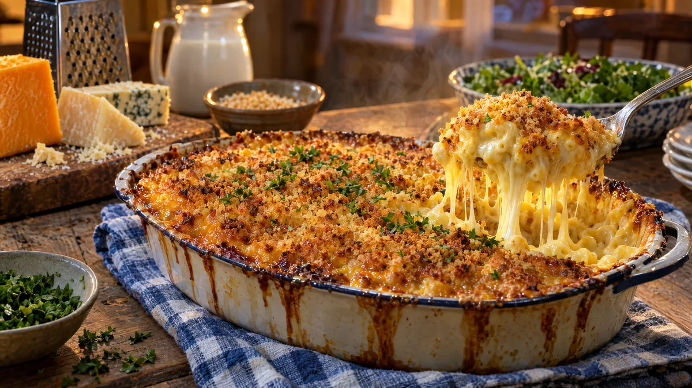

RESTFEST · RECEPTHuvudrätt
Krämig mac and cheese med kylskåpets ostbitar och krispigt täcke
Ett paket makaroner, mjölk och alla ostbitar som ligger kvar i kylen. Pastan vänds i en sidenlen ostsås med senap, täcks med smörigt ströbröd och gratineras tills ytan knastrar och osten bubblar upp längs kanterna. Barnens favorit, och de vuxnas, i söndagskläder.
- Förberedelse
- 15 min
- Tillagning
- 35 min
- Portioner
- 4–6
- Nivå
- Nybörjare
 Det här behöver du
Det här behöver du
JÄMFÖRT MED DIN KYL
Tryck på + vid det du behöver köpa.
Pasta
Ostsås
Täcke
Gör så här
- Sätt ugnen på 200 grader. Smörj en ugnsform, ca 20 × 30 cm.
- Koka makaronerna i rikligt med saltat vatten 2 minuter kortare än det står på förpackningen. De kokar klart i ugnen. Häll av.
- Smält smöret i en stor kastrull på medelvärme. Vispa ner mjölet och låt fräsa i 1 minut. Vispa i mjölken lite i taget och låt sjuda under omrörning i 5 minuter, tills såsen har tjocknat.
- Ta kastrullen från värmen. Rör ner senap, paprikapulver, muskot, salt, peppar och osten, tills osten har smält och såsen är slät. Smaka av. Såsen ska smaka lite för salt, eftersom pastan suger åt sig.
- Vänd ner makaronerna i såsen och häll allt i formen.
- Blanda ströbröd, smält smör och ost och strö det jämnt över.
- Gratinera i mitten av ugnen i 20–25 minuter, tills täcket är gyllene och krispigt och såsen bubblar längs kanterna. Låt stå i 5 minuter före servering.
Dekoration och servering
- Strö över persilja precis före servering och bär ut formen direkt till bordet.
- Ta den första portionen med en stor sked, så att de långa oststrängarna syns.
- Servera med en syrlig grönsallad eller ugnsrostade tomater vid sidan.
- Blanda gärna en lagrad ost med mycket smak och en som smälter bra, som mozzarella, så får du både smak och oststrängar.
Mått och ugnstemperaturer
Måtten är svenska (dl, msk, tsk, krm). Ugnstemperaturerna gäller vanlig ugn med över- och undervärme; med varmluft, sänk med 20 grader.